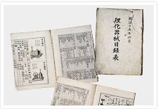

岛津集团的总公司日本岛津制作所自1875年创业以来，始终秉承创始人岛津源藏的创业宗旨“以科学技术向社会做贡献”，并以此为公司宗旨，不断钻研领先时代、满足社会需求的科学技术，为社会研发出具有高附加价值的科技产品。早在上世纪50年代，岛津公司就先后研制出光电式分光光度计、气相色谱仪、X射线分析仪等仪器。特别是在分析测试仪器、医疗仪器、航空产业机械等领域，以光技术、 X 射线技术、图像处理技术这三大核心技术为基础不断推陈出新，满足更加广泛的市场需求，使岛津的高科技产品在全世界都享有很高的评价。如今，二十一世纪风云变幻，岛津又在生命科学、环境保护等领域里不断钻研新技术，开发新产品，为世界范围内的广大用户不断提供更多的具有划时代意义的产品。
在当今世界，地球环境问题、经济问题、老年化社会问题，世界性信息网络发展等愈加复杂多样的课题有待人类解决。岛津公司作为分析测试仪器生产厂家的先驱，并没有仅仅停留在分析技术和分析计测技术这一层次，而是本着实现“为了人类和地球的健康”这一愿望，进一步利用所有技术，致力于解决与人类和地球生存息息相关的各种重要课题。
在"以科学技术向社会做贡献"的创业宗旨和实现"为了人类和地球的健康"这一愿望的经营理念的指导下，岛津人将始终致力于为用户提供更加先进的产品和更加周到的服务。
岛津企业管理（中国）有限公司成立于1999年8月11日，是岛津制作所的海外子公司，成立至今已取得了巨大的发展。目前，我们在全国拥有14个分公司，5个分析中心，60多个技术维修点，还有专门的研发中心、质谱中心以及众多一流的合作试验室。全体岛津人将以饱满的热情和扎实的工作努力回报广大客户以及业务伙伴们的关注与支持。
在第1届日本国内劝业博览会上获奖
在美国设立海外公司Shimadzu Scientific Instruments,Inc.
在中国设立合资公司北京岛津医疗器械有限公司
在越南设立海外公司Shimadzu Vietnam Medical Hi-Tech Company Ltd.
在中国设立岛津仪器（苏州）有限公司
成立岛津国际贸易（上海）有限公司
成立子公司株式会社岛津设备制造，专门生产光学部件等产品
成立子公司岛津A-tech株式会社，专门生产分析测试仪器
在印度成立海外公司Shimadzu Analytical India Private Limited
在中国成立委托分析公司-岛津（广州）检测技术有限公司
在台湾设立台湾岛津科学仪器股份有限公司
岛津Nexera UC在线 SFE-SFC-MS系统荣获Pittcon 2015金奖
岛津制作所木屋町总公司 |
成功放飞载人氢气球 |
|  理化学器械目录表 |
人体模型的制作场景 |
 1911年生产的第二台医疗用X光机 |
 1921年前后 用X光机为患者诊断的场景 |
1925年前后的岛津制作所三条工厂 |
现在的岛津制作所三条工厂 总部大楼 |
1930年 被选为日本十大发明家 |
 日本第1台 光电式分光光度计 |
 日本第1台 泛用气相色谱仪 |
世界第1台 远程遥控X光机 |
1969年研制出液相色谱仪 |
1970年推出世界第1台GCMS |
岛津制作所创业纪念资料馆 |
资料馆至今保存着黎元洪题匾 |
京阪奈研究所 |
岛津菲律宾制造有限公司 |
岛津（香港）有限公司 |
岛津仪器（苏州）有限公司 |
岛津国际贸易（上海）有限公司2011年更名为岛津企业管理（中国）有限公司 |
|
 2002年 田中耕一荣获诺贝尔化学奖 |
|
LCMS-IT-TOF获Pittcon 2005银奖 |
|
岛津Nexera UC Online SFE-SFC-MS System获Pittcon 2015金奖 |
|
创业140周年庆典 |
|
参加了日本自动化电子仪器医疗器械展
上西亮二社长作为副团长受到了周恩来总理的亲切接见
天津岛津液压有限公司成立
岛津仪器（苏州）有限公司成立
（2011年更名为岛津企业管理（中国）有限公司）
岛津GC产品50周年纪念
岛津分析技术研发（上海）有限公司成立
岛津GL公司成立
岛津武汉分公司成立
岛津沈阳分析中心成立
岛津企业管理（中国）有限公司河南分公司成立
1956年日本商品展览会毛主席在参观 |
1956年日本商品展览会毛主席在参观 |
1956年日本商品展览会毛主席在参观 |
 1956年日本商品展览会毛主席在参观 |
1956年日本商品展览会毛主席在参观 |
1956年日本商品展览会毛主席在参观 |
1956年日本商品展览会毛主席在参观 |